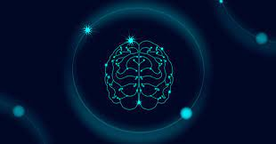
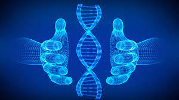
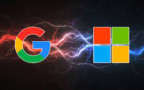
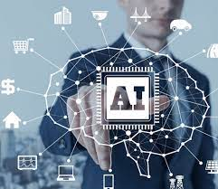

WHAT IS BLUE BRAIN?
Blue brain is the name of the world’s first virtual brain that can function as human brain. Today
scientists are in research to create an artificial brain that can think, response, take decision, and keep
anything in memory. The main aim is to upload human brain into machine. So that man can think,
take decision without any effort. After the death of the body, the virtual brain will act as the man .So,
even after the death of a person we will not lose the knowledge, intelligence, personalities, feelings
and memories of that man that can be used for the development of the human society.
The IBM is now developing a virtual brain known as the Blue brain. It would be the world’s first virtual
brain. Within 30 years, we will be able to scan ourselves into the computers.

BLUE BRAIN – A SUBWAY TO ARTIFICIAL INTELLIGENCE
latest news

Companies are using DNA mist, blockchain, digital twin technology to bring transparency and build an efficient supply chain.

In AI race, Google and Microsoft choose speed over caution!

ET Careers GenNext: Can AI help investment management professionals?
Can AI replace jobs & surpass human mind? Google CEO Sundar Pichai speaks up on the dangers of artificial intelligence Can AI replace jobs & surpass human mind? Google CEO Sundar Pichai speaks up on the dangers of artificial intelligence